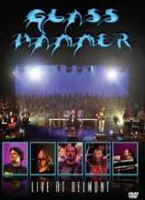

| Artist: | Glass Hammer |
| Title: | Live At Belmont |
| Label: | Arion Records SR-1726 |
| Length(s): | 98/75 minutes |
| Year(s) of release: | 2006 |
| Month of review: | [07/2008] |
| 1) | Long And Long Ago | |
| 2) | One King | |
| 3) | Run Lisette | |
| 4) | Farewell To Shadowlands | |
| 5) | Through A Glass Darkly | |
| 6) | Knight Of The North | |
| 7) | When We Were Young | |
| 8) | Having Caught A Glimpse | |
| 9) | Heroes And Dragons |
Glass Hammer is known for its full sound created by lush synths and guitars. This DVD makes clear that playing live works quite well for this set of people, although I do feel that the instruments get just a little too much personal room for a music style that so much hinges on exactly the opposite, being the balancing of the instruments. Especially the vocals are often quite dominant, puting emphasis on the storylines.
Alongside the already sizeable core band with satellites, numbering nine, we get a further threesome of stringy players. And, as an extra special bonus: the Belmont 150+ choir on the final two tracks. The latter of course is a nice bonus, but it's unfortunate how the mix manages to nearly drown out a choir of the size. Truly a remarkable feat (or should that be 'waste'?). During the closer of the regular set Heroes And Dragons the band finally manage to build some nice momentum and come up with a good full sound that works to creating an atmosphere. The choir has picked up a bit in the mix, too, now.
The second disc contains such popular favourites as rehearsals, behind the scenes, a trailer (yes, now on music DVDs too!), interview bits and some actual music, being an extra bit of live footage of older concerts, totalling some 29 minutes. But be forewarned: this is not exactly 5.1 quality, in fact half of it seems to have been recorded in a barn with a couple of friends, for all of its lo-fi intimacy (Oh, read me: I finally do get some intimacy, and still there's something to whine about). As so often with double DVDs: the interesting bits could have easily fit onto one disc, and the unwitting consumer/fan would be pressed for money just a tad less to get their fix worth of music.
On a practical note: my promo copy did not include a booklet. I'm not sure whether the regular street version will have one. This version for one is pretty poor on the info offered, especially since 20/20 vision barely suffices for reading the text on the back of the DVD box. And another one: through a tremendous effort the band have managed to blow up the 1 hour 38 mins of the first disc and the 1 hour 15 mins of the second to 250 minutes. Wow! Anyway, don't believe the hype, the double disc is 2 hours 53 mins, no more than that.
Even though the technical performance during this concert is good, there is no atmosphere, no pull into the music. It's presented on a platter and just seems to be lying there. The band make no visible effort of making the visual side of a DVD work. That's flat out disappointing, since there's only so much 5.1 can compensate for. If you don't know the band yet, I would recommend you try it out with one of their studio efforts. Those of you who do know the band know what they're about. Don't expect this disc to change that opinion much. This is solid live performance without any magic.